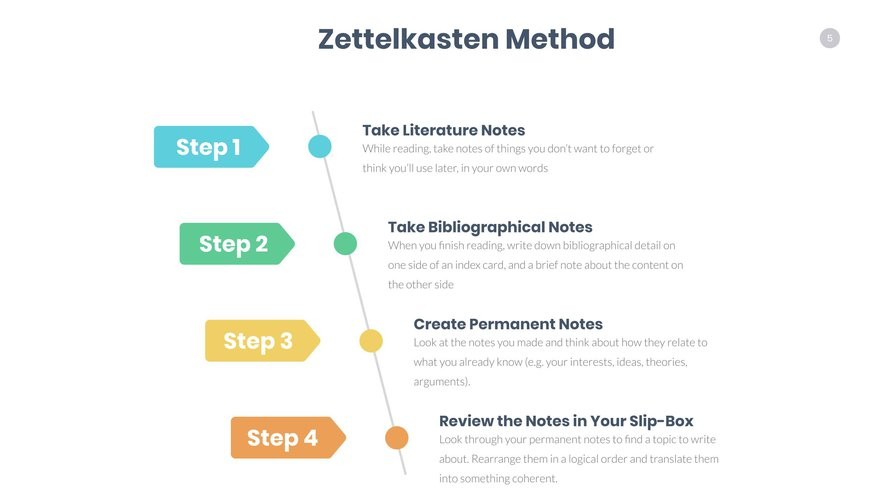
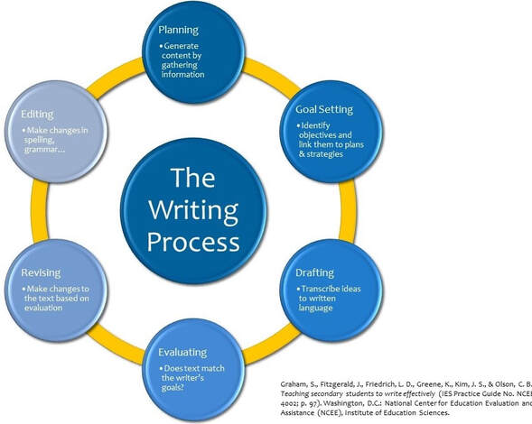

1 Organisation and introduction
Methods in linguistics
Organisation
Course materials
Course website: https://wuqui.github.io/MethLing251/
Registration
Open issues?
Are you taking this course as part of a Modulprüfung? → See course requirements for details about WP 13.
Course description
This course will guide you through the process of designing and conducting a research project in linguistics, from identifying a topic, to carrying out the research, to composing the final written document (e.g., term paper, BA thesis, Zulassungsarbeit).
You will be offered practical advice on
- planning and organising your work,
- identifying and narrowing a topic,
- developing and refining research questions,
- finding and managing background information and literature,
- effective and sustainable note-taking,
- referencing literature and avoiding plagiarism,
- collecting and analysing data using various methods (e.g. corpora, surveys),
- reporting results and academic writing.
For each topic, I will provide relevant materials and guide you through hands-on exercises to develop practical skills. You will have the opportunity to share your project ideas and receive constructive feedback.
Requirements
Assessment formats vary based on ECTS credits:
- 3 ECTS: short paper (≈ 3–5 pages)
- 6 ECTS: long paper (≈ 10–12 pages)
Check your Studien-/Prüfungsordnung for the exact specification.
Introduction
Motivations, expectations, and goals
- What is your background?
- previous experience, study programme, field of linguistics, etc.
- What kind of a project are you going to work on?
- type: term paper, BA thesis, Zulassungsarbeit etc.
- domain: (linguistic) field, supervisor
- deadline: when are you planning to conduct and finish your project?
- Which topic are you planning to write your paper about?
- Which data and methods are you planning to use?
Note-taking
Mental lexicon

Networked notes

The Zettelkasten method (Niklas Luhmann)

See Ahrens (2017).
Tools: e.g. Obsidian
Self-management

Research questions and hypotheses

- research question
- hypothesis: what do you expect?
- Why do I expect to find this? (→ literature)
- hypothesis: what do you expect?
References management
Reading and writing

Linguistic data and methods
Dictionaries
- Urban Dictionary
- Wiktionary
- OED
Questionnaires
Corpora
Sketch Engine
english-corpora.org

Data analysis
Using Microsoft Excel
Using tables

Using pivot tables
Creating visualisations

Presenting results
Slides
Charts

For next week …
There will be no in-person class next week since I’m attending a conference.
Please read Chapter 1 in Litosseliti (2025).